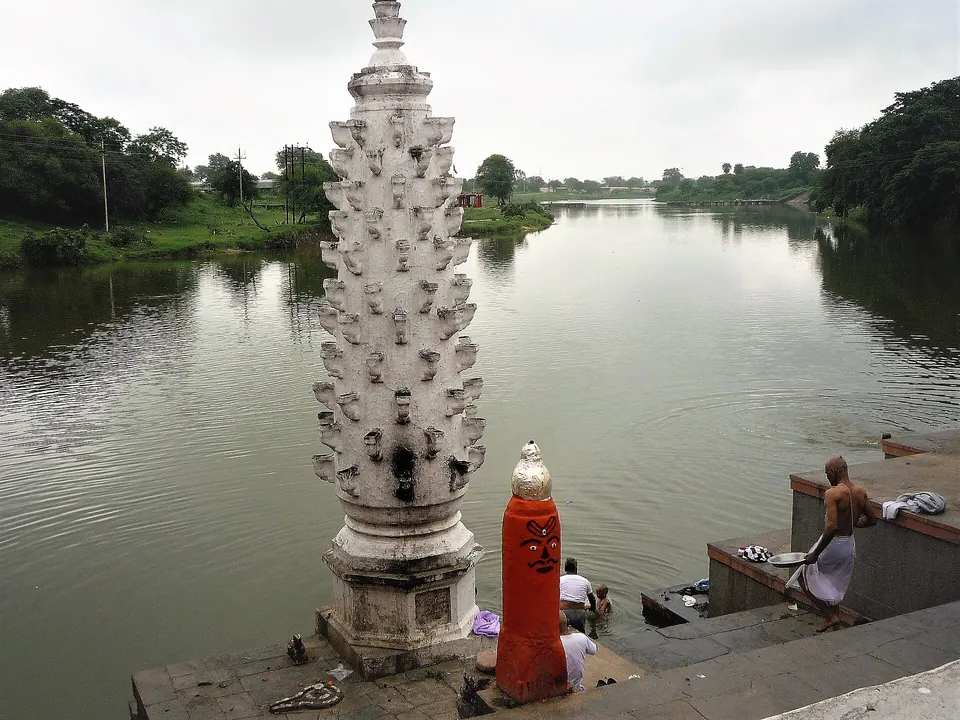
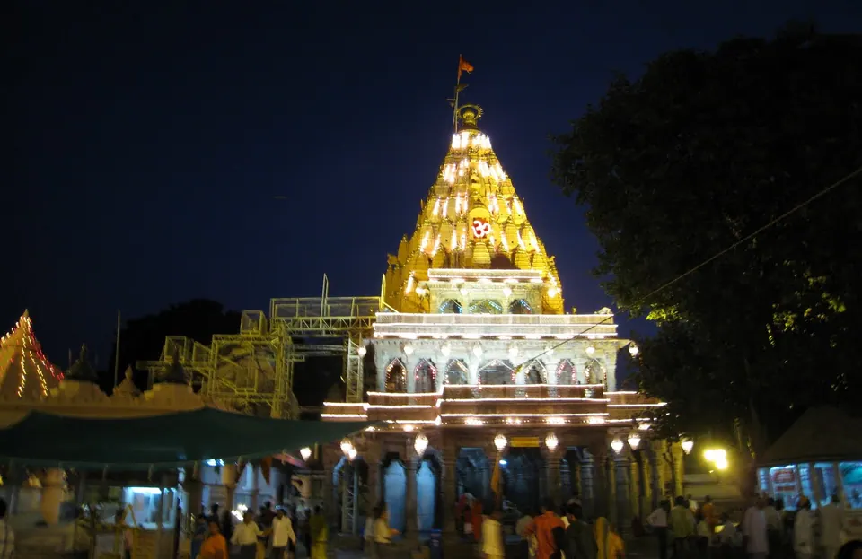

Diwali in Ujjain 2026: Mahakal Darshan, Dates and Where to Stay

Diwali 2026 falls on Sunday, 8 November, and the five-day festival runs from Dhanteras on Friday, 6 November to Bhai Dooj on Tuesday, 10 November. The temple has kept darshan open through Diwali in earlier years, but we have not seen the official 2026 programme, so expect a festive, crowded city and check the temple's announcements before you travel.
We have hosted pilgrim families in Ujjain since 2023. If you are planning a Diwali trip, you may be wondering: "Is it a good time to come? Will we get darshan? Where do the children rest while the elders queue?" We share here what we know, what the temple has done in earlier years, and what we cannot promise, because the temple announces its festival arrangements close to the day.
The five Diwali dates in 2026
Panchangs can differ by a day between regions, so please confirm with your pandit ji or a local Ujjain calendar. The dates below match Hindu Tone and Kissht. One other calendar we saw puts Choti Diwali, Govardhan Puja and Bhai Dooj a day later, which is why a local check matters.
- Friday, 6 November: Dhanteras. Families buy something small and auspicious and light the first lamps.
- Saturday, 7 November: Choti Diwali (Naraka Chaturdashi).
- Sunday, 8 November: Diwali and Lakshmi Puja, the main day.
- Monday, 9 November: Govardhan Puja, also called Annakut.
- Tuesday, 10 November: Bhai Dooj.
The Lakshmi Puja muhurat differs from city to city. We have not found a published Ujjain-specific time, so ask your pandit ji or check a local panchang rather than relying on a Delhi or Mumbai figure.
Mahakal darshan on Diwali: what to expect
Diwali at Mahakaleshwar is a living celebration. We have not found the official 2026 Diwali programme yet, so the best guide is what the temple has done in earlier years.
- 2024: On Diwali, Thursday, 31 October, priests held a special puja, decorated the temple with flowers, performed the abhishek of Lord Mahakal and lit sparklers in the sanctum to begin the celebrations, with the Bhasma Aarti held as usual, according to ETV Bharat.
- 2022: After the evening aarti, the temple committee began a Deepotsav, and Business Standard reported 1,11,000 earthen lamps lit at the temple, with a special aarti for Naraka Chaturdashi.
We cannot say the 2026 programme will repeat either year. Treat these as a pattern, and check the temple's official site in the week before you travel.

Timings that matter
A commercial guide, Ujjain Darshan, lists the temple as open from 4:00 AM, with the Bhasma Aarti at 4:00 to 6:00 AM, the Sandhya Aarti at 5:00 to 5:30 PM and the Shayan Aarti from 10:30 PM, all needing an advance online pass. The same page says morning aarti timings shift by about 30 minutes in winter and during major festivals. This is a third-party page, so please confirm on the official temple site. Our darshan timings guide and Bhasma Aarti booking guide explain how passes work.
Crowds: how heavy is Diwali week?
Heavy, though we have no official Diwali crowd figure for 2026. For context, ETV Bharat reported in December 2025 that the temple sees nearly 1.2 lakh devotees on an ordinary day and 1.5 to 1.75 lakh on weekends. A temple priest told ANI in 2022 that Diwali footfall rose so sharply that sanctum darshan could not be arranged for everyone, as carried by Zee5.
Dhanteras and Choti Diwali fall on a Friday and Saturday, and Diwali on a Sunday. That is our reading of the calendar, not an official forecast, but it suggests the weekend of 6 to 8 November will be the busiest stretch.
How we would plan darshan with family
- Choose gentler hours. Weekday mornings are usually calmer than evenings. Monday 9 and Tuesday 10 November may be quieter than the weekend, though we cannot promise it.
- Book passes early if you want an aarti that needs an advance pass, and carry the same government ID you booked with.
- Keep the plan light. One darshan a day is enough. Use the rest of the day to rest.
- Protect your elders. Sit them down between queues, carry water, and decide before you leave who will wait with them.
- Leave early in the evening. Roads near the temple fill up as the lamps are lit, so allow extra time even for a 12-minute walk.
What families do in Ujjain over Diwali
You do not need to spend all five days in a queue. A few ideas that do not depend on a ticket:
- Light lamps by the Shipra. Ram Ghat is where families gather for deepdaan, the offering of lamps to the river. Go in the evening and keep children close near the steps. Our Kartik and Hari-Har Milan guide covers the ghats and the later November dates.
- Walk the Mahakal Lok corridor in the evening, away from the sanctum queue. Our Mahakaleshwar guide describes it.
- Visit other temples such as Harsiddhi and Kal Bhairav on a quieter day. Our list of sacred places in Ujjain helps you choose.
- Celebrate at home. If your family likes to make sweets, light diyas and draw a small rangoli, a stay with a kitchen lets you keep those traditions even away from home.
- Day trips. If the city feels too busy, our travel page lists transport and day trips, including Omkareshwar.
Shops and traffic can change over the festival days, and we do not have confirmed holiday hours for restaurants or markets. If something matters to you, ask our caretaker on arrival and they will check.
Practical tips for a Diwali trip
Settle your stay and transport early
Trains and rooms across India fill up before Diwali. If you are coming for Dhanteras to Bhai Dooj, we would settle your stay first and then plan darshan around it.
What to carry
- Government photo ID for every adult, matching your pass booking.
- Comfortable footwear that is easy to remove, and a light shawl for early mornings.
- Small diyas, matchsticks and a little oil or ghee if you want to light lamps where you stay.
- Medicines for elders, and a water bottle for the walk.
Mind the fireworks
Crackers will be busy in the evenings across the city, which can disturb small children and elderly guests. Pets are welcome at our villas, but animals can be frightened by fireworks, so plan a quiet indoor spot for them.
Where to stay near Mahakaleshwar for Diwali
All five AP Villas are within 2 km of Mahakaleshwar Jyotirlinga, about 6 minutes by car or 12 minutes on foot, with a complimentary Mahakal shuttle for in-house guests (up to 5 guests per trip). In a crowded festival week, a short ride home between darshan and rest matters a great deal.


Rudrangan Suites: a calm base for a crowded week
Rudrangan Suites opened in 2026 with designer finishes, premium linens and garden seating for quiet evenings after darshan. It has 3 bedrooms and sleeps 6, from ₹5,200 per night. There is a lift and the stay is wheelchair friendly, which helps when grandparents are travelling, and pets are welcome. The kitchen has an induction cooktop, microwave and mini fridge, so you can make Diwali sweets and simple meals at home. Check-in is 10:30 AM and check-out 9:30 AM, and a later check-out can be arranged on request, subject to availability.
If your group is larger
- Divinestay: 3 bedrooms, sleeps 8, from ₹5,500 per night, with a private rooftop.
- Om Shanti Stay: 2 bedrooms, sleeps 6, from ₹4,500 per night.
- AP Suite: 2 bedrooms, sleeps 4, from ₹4,200 per night.
Our caretaker explains the Bhasma Aarti booking process on your arrival evening, and the shuttle drops you at the temple gate by 3:30 AM for the 4 AM aarti. The help is complimentary; the temple's own permit is booked by you. See all five on our villas page. For Diwali dates, message us on WhatsApp to confirm availability and the cancellation terms that apply.
Frequently asked questions
What are the Diwali 2026 dates?
Dhanteras is Friday, 6 November, Choti Diwali Saturday, 7 November, Diwali and Lakshmi Puja Sunday, 8 November, Govardhan Puja Monday, 9 November and Bhai Dooj Tuesday, 10 November. Regional panchangs can differ by a day, so confirm with your pandit ji or a local Ujjain calendar before booking.
Is Mahakaleshwar open on Diwali?
In earlier years, yes: the temple held Diwali pujas, an abhishek and a Bhasma Aarti, and in 2022 a Deepotsav after the evening aarti. We have not seen the official 2026 programme, so please check the temple's official site in the week of your visit for timings and any changes.
How crowded is Ujjain during Diwali?
Expect heavy crowds. A priest told ANI in 2022 that Diwali footfall was so high that sanctum darshan could not be arranged for everyone. Diwali 2026 is on a Sunday, so the weekend of 6 to 8 November is likely to be busiest. We have no official 2026 figure.
Do I need a pass for the Bhasma Aarti on Diwali?
On normal days the Bhasma Aarti needs an advance online pass, per Ujjain Darshan, and festival arrangements may differ. Book through the official portal as early as it allows, carry the ID you booked with, and ask our caretaker to explain the process on arrival. Please verify current rules before you travel.
Can we cook Diwali sweets at an AP Villas stay?
Yes. Every villa has a full modular kitchen with microwave and cookware, and Rudrangan Suites also has an induction cooktop. A local cook can be arranged for simple home-style thalis on request. Please see our contact page or message us on WhatsApp for details.
Sources
- Hindu Tone: the 5-day Diwali festival 2026, Dhanteras to Bhai Dooj
- Kissht: Diwali 2026 date and Lakshmi Puja timing
- ETV Bharat: Diwali celebrated at Mahakaleshwar Temple (2024)
- Business Standard: 1,11,000 earthen lamps lit at Mahakaleshwar on Diwali (2022)
- Zee5 / ANI: devotees throng Mahakaleshwar Temple (2022)
- ETV Bharat: Mahakaleshwar footfall and donations in 2025
- Ujjain Darshan: Mahakaleshwar temple timings (third-party guide)
- Shri Mahakaleshwar temple: official portal
Timings, prices and dates change, especially on festival days. Please verify before you travel with the official temple or government site.
If Diwali is bringing your family to Ujjain, write to us and we will tell you honestly what is available and how to plan the days. We would be glad to host you.
— Apoorv, Founder, AP Villas & Resorts